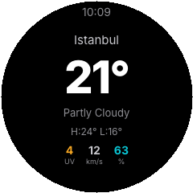
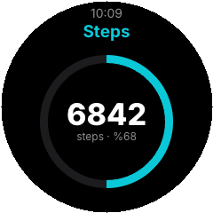
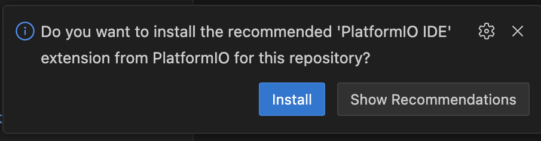
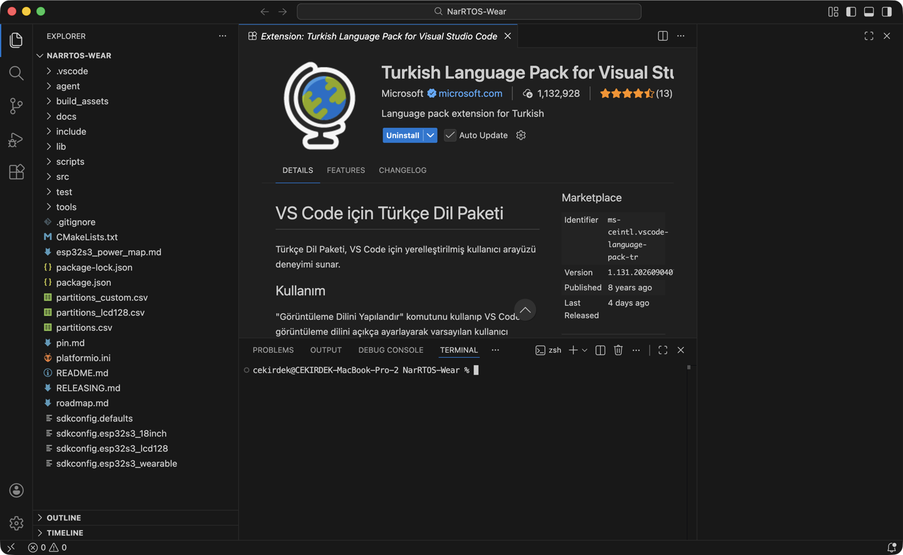

NARRTOS WEAR
NarRTOS için VS Code Kurulumu
NARRTOS WEARDökümantasyon Serisi
NARRTOS WEAR
NarRTOS için VS Code Kurulumu
Hiç geliştirme aracı olmayan bir bilgisayarı, Hızlı Başlangıç'taki ilk komutu yapıştırabilecek noktaya getiriyoruz. 10-15 dakika sürer.




Neye ihtiyacınız var
- Windows, macOS ya da Linux çalıştıran bir bilgisayar gerekir.
- İki program indirileceği için internet bağlantısı gerekir.
- Kurulum sırasında bilgisayarınızın şifresi sorulabilir.
Adımları sırayla takip ederseniz 10-15 dakika sürer.
Sonunda VS Code kurulu, içinde bir terminal açık, git hazır ve proje dosyaları bilgisayarınızda olur.
VS Code'u indirip kurun

code.visualstudio.com adresine gidin. Büyük Download düğmesi işletim sisteminizi kendisi tanır.
Windows'ta .exe dosyasını çalıştırın ve "Add to PATH" kutusu işaretli kalsın. macOS'ta uygulamayı Applications klasörüne sürükleyin.
Ubuntu ve Debian'da .deb dosyasını indirip çift tıklayın ya da sudo apt install ./code_*.deb komutunu kullanın.
Terminali VS Code içinde açın (macOS)

Üst menüden Terminal, ardından New Terminal seçin. Pencerenin altında bir panel açılır; komutları buraya yazacaksınız.
Bir komut yazıp Enter'a basarsınız ve çalışması bitene kadar beklersiniz. Bitince yeni bir satır başı gelir.
Terminali VS Code içinde açın (Windows / Linux)

Windows ve Linux'ta menü şeridi pencerenin içinde, en üsttedir. Terminal menüsünden New Terminal seçin.
Windows'ta panel PowerShell, Mac'te zsh çalıştırır. Bu dökümandaki komutlar ikisinde de aynıdır.
Git'i kurun
- Önce kontrol edin: git --version yazın. "git version 2" ile başlayan bir satır görüyorsanız git kuruludur; sonraki adıma geçin.
- Windows'ta git-scm.com/download/win adresinden kurulum dosyasını indirin, bütün ekranlarda Next deyin. Bitince VS Code'u tamamen kapatıp yeniden açın.
- macOS'ta git --version yazınca çıkan "command line developer tools" penceresinde Install deyin. Pencere çıkmazsa xcode-select --install komutunu çalıştırın.
- Linux'ta sudo apt install git komutu yeter.
Git, proje dosyalarını internetten indiren araçtır. Hızlı Başlangıç'taki ilk komut onu kullanır.
Kurulum bitince git --version komutunu tekrar çalıştırıp sürüm satırını gördüğünüzden emin olun.
Klasör seçin ve projeyi indirin
Terminal ev klasörünüzde açılır. Dağınıklık olmasın diye mkdir Projeler ile bir klasör oluşturup cd Projeler ile içine girin.
Hızlı Başlangıç'taki git clone satırını kopyalayıp terminale yapıştırın. Windows'ta Ctrl ve V, Mac'te ⌘ ve V tuşlarını kullanın; sonra Enter'a basın.
Cloning into ile başlayan satırlar akar ve done ile biter. İkinci komut olan cd NarRTOS-Wear klasörün içine girer.
Klasörü VS Code'da açın (macOS)

Üst menüden File, ardından Open Folder seçin. Projeler içindeki yeni klasörü seçip Open deyin.
"Do you trust the authors?" diye sorarsa Yes, I trust the authors deyin.
Klasörü VS Code'da açın (Windows / Linux)

Windows ve Linux'ta File menüsünden Open Folder seçin. Menü, pencerenin içindeki üst şerittedir.
Eklenti önerisini kapatın

Sağ altta bu balon çıkar. Install ya da Show Recommendations demeden çarpı ile kapatın.
Bu rehber PlatformIO'yu Başlarken sayfasındaki komut satırı yoluyla kurar; eklenti gerekmez.
Proje açık, terminal hazır

Solda proje dosyaları listelenir: src, docs, platformio.ini ve diğerleri.
Klasörü açınca terminal kapanmış olabilir. Terminal menüsünden New Terminal ile yeniden açın; bu kez doğrudan proje klasöründe açılır.
Buradan sonrası
- Artık VS Code kurulu, terminal açık, git hazır ve proje indirilip açılmış durumda.
- Hızlı Başlangıç'ın ilk iki komutu tamamlandı. Kalan iki komut (pio run ve pio device monitor) PlatformIO ister.
- PlatformIO'yu hiç kurmadıysanız Başlarken sayfasına geçin. Birinci ve beşinci adım zaten yapıldı; ikinci adımdan, yani Python'dan devam edin.
- Oradaki bütün komutları bu VS Code terminaline yazacaksınız.
Bundan sonrası Başlarken dökümanında: Python, PlatformIO, kartı bağlama, derleme ve yükleme.
İlk denemede en sık takılınan yerler
- Windows'ta git kurdunuz ama terminal tanımıyorsa VS Code kurulumdan önce açılmıştır. Tamamen kapatıp yeniden açın.
- Mac'te kurulum penceresi çıkmadıysa terminale xcode-select --install yazın.
- Ctrl ve V terminale yapıştırmıyorsa sağ tıklayıp yapıştırın ya da Ctrl, Shift ve V kullanın.
- fatal: repository not found hatası adresin eksik kopyalandığını gösterir. Satırı baştan sona seçip yeniden kopyalayın.
- Hangi klasörde olduğunuzu bilmiyorsanız satır başındaki klasör adına bakın. İçindekileri görmek için Mac ve Linux'ta ls, Windows'ta dir yazın.
- Terminal paneli kaybolduysa Terminal menüsünden New Terminal seçin.
"Trust" sorusuna yanlışlıkla No dediyseniz klasörü File menüsünden Open Folder ile yeniden açıp Yes deyin.
NARRTOS WEAR
VS Code, git ve proje hazır.
Devamı Hızlı Başlangıç ve Başlarken dökümanlarında. corezzle.com
İzlediğiniz için teşekkürler
Sıradaki videoSıradaki video
Oynatma listesiOynatma listesi
Abone olunYeni bölümlerden haberdar olun
corezzle.com · github.com/corezzle/NarRTOS-Wear